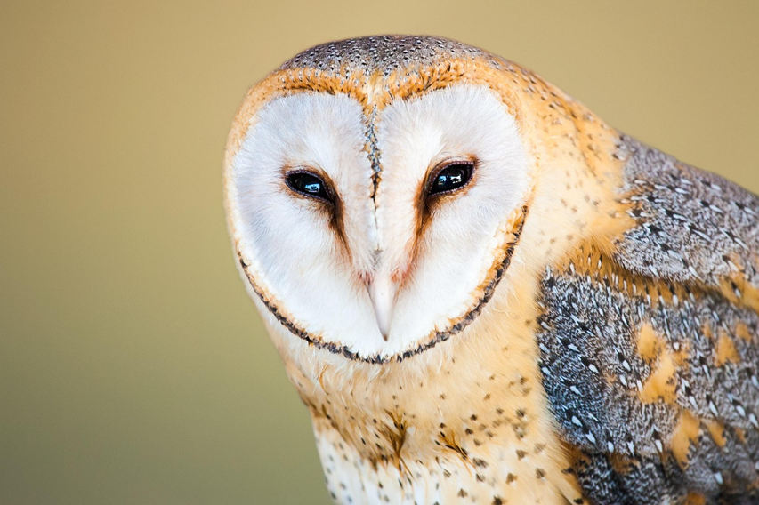
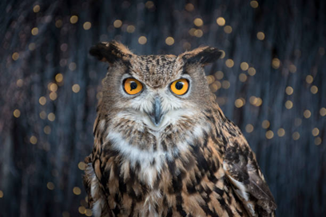
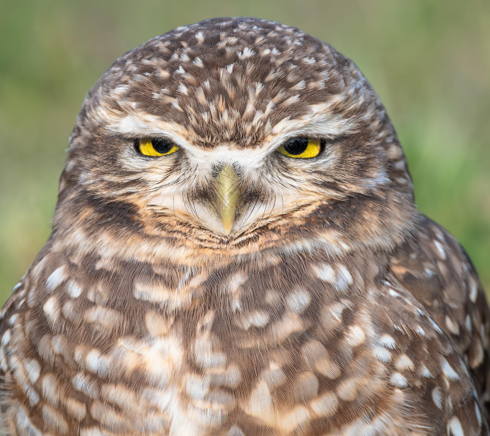
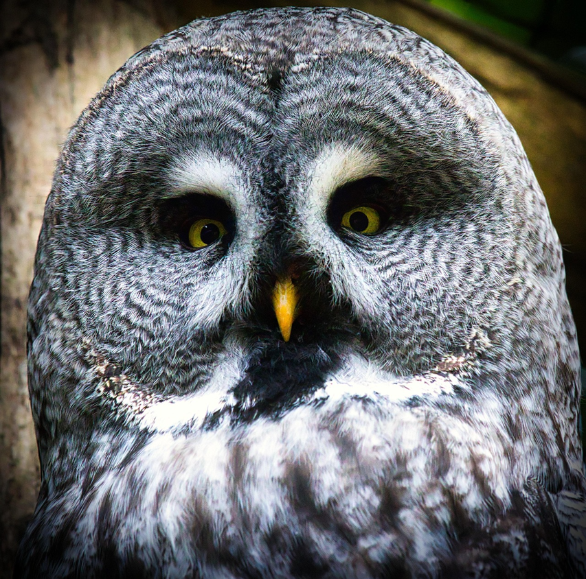
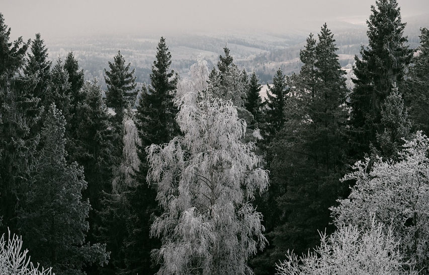
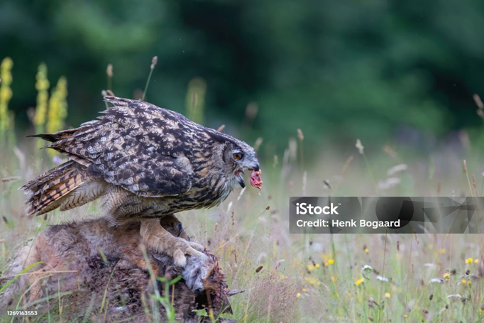
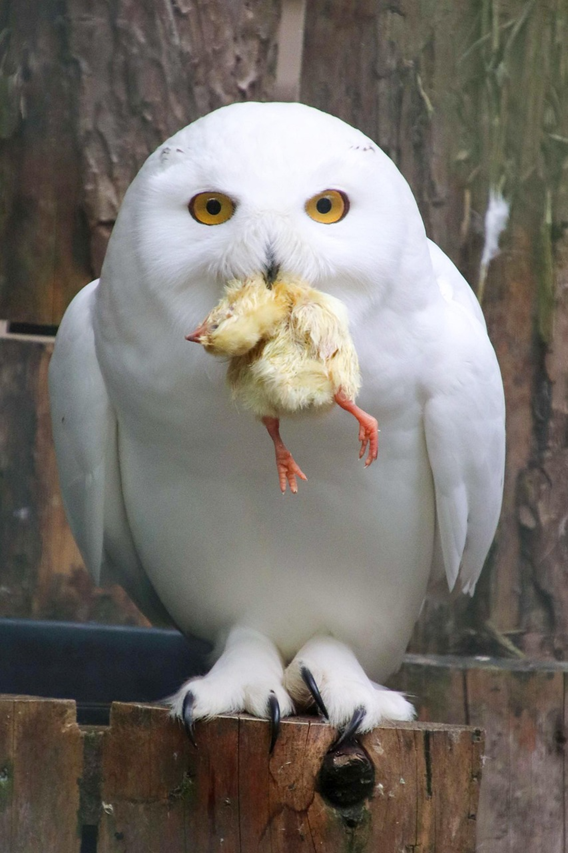
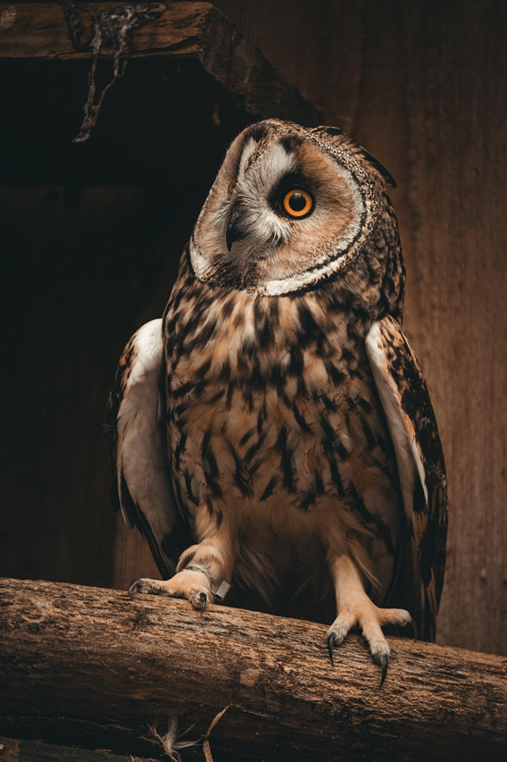
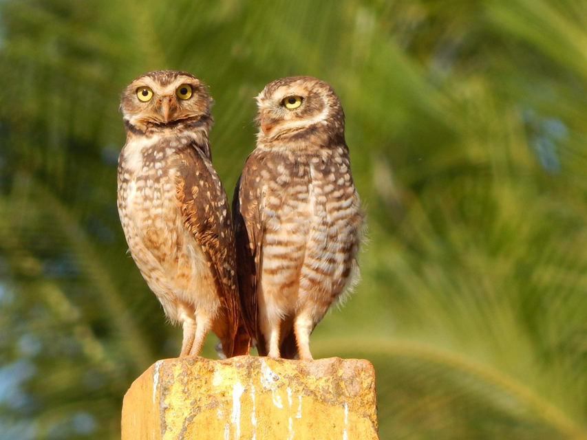
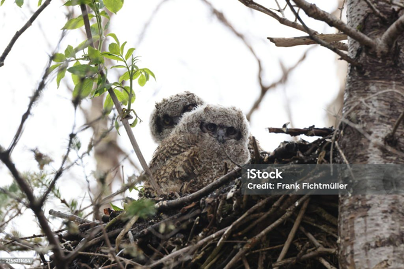

Conocías el cómo los búhos son cazadores excepcionales, tanto como las águilas, esto se debe a que los búhos tienen una audición aguda y una visión nocturna característicos de ellos, las cuales les permiten localizar a sus presas incluso en la oscuridad total. Además, los búhos tienen un vuelo silencioso, lo que les permite acercarse sigilosamente a sus presas sin ser detectados. Estas adaptaciones hacen que los búhos sean cazadores eficientes y exitosos en su entorno natural.
Los buhos pertenecen a la familia Strigidae y existen unas 200 especies en todo el planeta. Este es reconocido por ser un ave de gran inteligencia y de caza nocturna ya que puede permanecer despierto durante la noche y se caracteriza por ser solitario.


Si bien el búho y la lechuza resultan muy similares y pertenecen a la misma familia de aves rapaces denominada strigiformes, presentan ciertas diferencias por lo que se dividen en dos grupos principales:
El más pequeño de los búhos se llama búho enano, que puede medir 13 centímetros de altura y pesar 30 gramos. El más grande se llama búho real o bubo, que puede medir hasta 70 centímetros de alto y pesar hasta 3 kilos.


Es un ave que puede vivir hasta 20 años y suele habitar el mismo territorio durante toda su vida, en especial, áreas de bosques con árboles perenne (que no pierden sus hojas durante el invierno) donde elige establecer sus nidos.

Los búhos habitan en todo el globo terráqueo a excepción de la Antártida, ya que el clima de esa región no es apto para su permanencia. Estos animales aéreos son capaces de vivir tanto en selvas tropicales, como en las costas, montañas y zonas desérticas. Cada especie está adaptada a las condiciones climáticas de la región en donde habitan.
El búho es carnívoro y suele cazar presas de menor o casi del mismo tamaño que él. Debido a sus desarrollados sentidos de la vista y del oído, suele cazar de noche.

Durante la caza los buhos se mantienen quietos analizando su entorno con sus oidos y esto es lo mas inpresionante, ya que son capaces de escuchar hasta el mas minimo crujir de una hoja, una vez detectada la presa fijan sus hojos en ella y gracias a su vision nocturna la localizan y se lanzan sobre ella, la presa no lo puede oir por que es silencioso su vuelo, asi es como cazan inbertrebados
Algo curioso de los buhos es que su excremento es blanquecino y bastante llamativo para los escarabajos, asi que mientras un escarabajo busca alimento el buho con sus desechos crea una trampa para obtener alimento
Se alimenta, en su mayoría, de lagartijas, conejos, arañas, insectos, caracoles, gusanos, otras aves y, a veces, de peces. Una vez que atrapa a una presa no la mastica, sino que la desgarra y la traga de manera directa.

tiene plumas en su cabeza que se asemejan a unas orejas. estos tienen el sentido auditivo desarrollado, capaz de oír hasta diez veces mejor que un ser humano. la forma de su cabeza hace que sea como un radar ya que el ruido rebota debido a la forma de su cabeza y a la estrectura de su plumaje, tambien estos tienen vista panoramica similar a la de los humanos solo que estos no pueden mover sus ojos ya que estan unidos a sus cuencas

Estos se reproducen en la temporada de calor. Otro factor que toman en cuenta para aparearse es que no exista escasez de alimentos.

El macho inicia el ritual de apareamiento haciendo exhibiciones de vuelo, cantos, ofrendas, todo esto para llamar la atención de la hembra. Generalmente no construyen sus nidos, sino que ocupan nidos abandonados. Los huevos que incuban los búhos son redondos y blancos con tonalidades azules y grises. La cantidad de huevos va a depender del tipo y de la alimentación de los mismos.
La hembra no pone el mismo día los huevos y ella es la encargada de incubarlos y protegerlos de los depredadores. Durante 30 o 45 días se incuban los huevos y en este periodo la hembra es alimentada por el macho.

La hembra es capaz de colocar entre 3 a 5 huevos dependiendo de la especie, pero hay algunas especies como el búho excavador, puede poner hasta 10 huevos Estos serán incubados en un período de 1 mes. Después de nacidas las crías, podrán volar luego de 6 semanas y después de las 14 semanas se irán del nido.